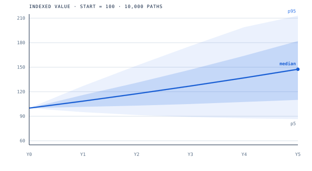
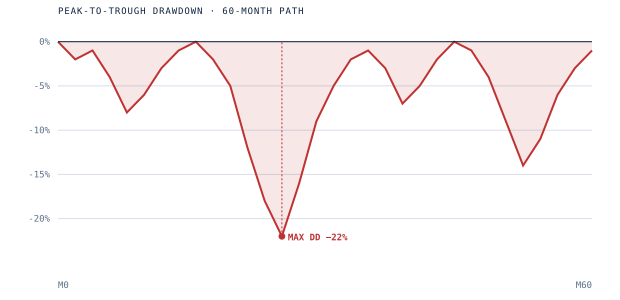
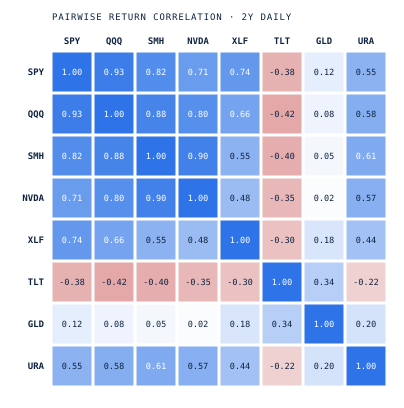

A personal Monte Carlo portfolio simulator built in Streamlit. Runs 10,000 correlated GBM paths, fits a historical risk model via OLS on factor proxies, and produces an institutional-style PDF research note with drawdown analysis, stress tests, and factor exposure.
Runs 10,000 correlated GBM paths across all positions using a Cholesky-decomposed covariance matrix. Each path is an independent draw from the joint return distribution over the full simulation horizon.
Fits a 3-factor model via OLS on SPY, SMH, and URA as market proxies — Gram-Schmidt orthogonalized. Extracts per-ticker sigma and factor loadings from 2 years of daily returns. Falls back to hand-set defaults for tickers with thin history.
Per-ticker weight sliders in two modes: pro-rata (drag one, others auto-scale) and free (independent + normalize). Runs a fresh Monte Carlo on the what-if weights and shows KPI deltas versus the current book. Writes rebalanced positions back as fractional shares.
Generates a 14-section research note via ReportLab: cover, executive summary, headline metrics, holdings P&L, composition by theme, concentration profile (HHI / Gini), factor exposure, Monte Carlo output, drawdown distribution, stress tests, and position deep-dives.
A single run turns a book of positions into a distribution of outcomes. These are the core figures from the research note — projection, downside, and the correlation structure that drives both. Illustrative demo book

Each path is an independent draw from the joint return distribution, built from a Cholesky-decomposed covariance matrix. The cone widens with √time; the median compounds to ≈ 1.46×, but the p5 band is where the risk decision actually lives.

The underwater curve tracks how far the book sits below its prior high at every point. Worst observed drawdown on this path: −22%.

Pairwise return correlation drives diversification. Note the tight equity/semis cluster and TLT's negative correlation — the hedge the simulation leans on in stress.
Every run is exported as a 14-section institutional PDF: executive summary, holdings P&L, concentration (HHI / Gini), factor exposure, the Monte Carlo output above, drawdown distribution, and stress tests. The download is a real generated report.
GBM understates fat tails and assumes stable correlations — both break in a crisis, exactly when they matter most. Estimates are backward-looking. This is a research & learning tool, not investment advice, and the demo book is illustrative.